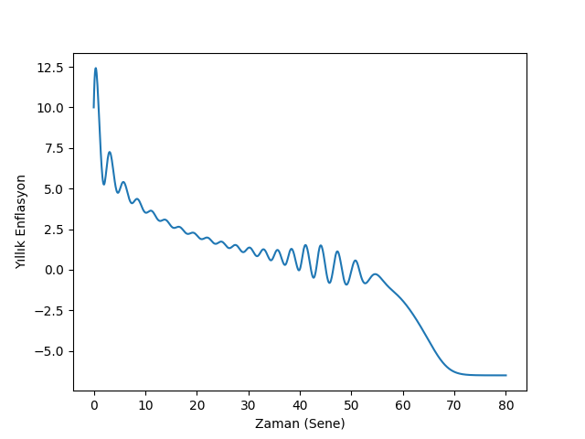
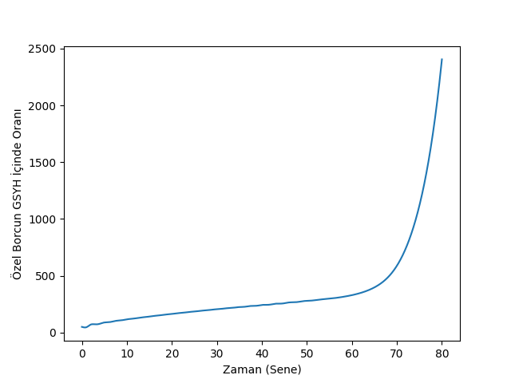
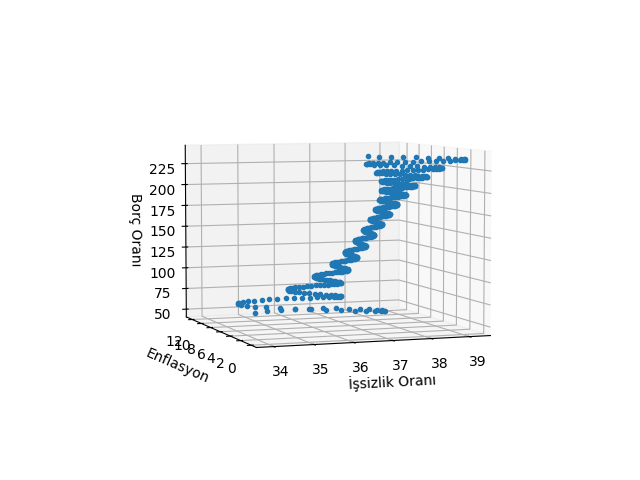

Enflasyon
Şimdi fiyatları ekonomi modeline dahil etmeye uğraşalım. Daha önce yaptığımız gibi ekonomik tanımları, önkabulleri formülsel olarak ortaya koyacağız, ve ortaya çıkan modeli çözeceğiz. Tanımları ortaya koyalım,
%"Employment rises if the growth rate exceeds population growth and labor productivity."
"Eğer büyüme oranı nüfus artışı ve işçi üretkenliğinin toplamını geçerse istihdam artar"
$$ \frac{\dot{\lambda}}{\lambda} = \left( g - (\alpha + \beta) \right) $$
$\alpha + \beta$ işçi üretkenliği ve nüfus artışı.
$g$ büyüme oranı. Bu $g$ gerçek büyüme hızı, yatırım hızı ve onun amortismanı üzerinden hesaplanır.
%"Wage share rises if money wage demands greater than labor productivity and %the inflation rate"
"Eğer ücretlere giden para talebi işçi üretkenliği ve fiyat artışı / enflasyondan fazlaysa işçi ücretlerinin payı artar".
$$ \frac{\dot{\omega}}{\omega} = \left( (\underbrace{w_{fn}(\lambda)}_{A} - \underbrace{\alpha}_{B}) + \frac{1}{\tau_p} \underbrace{\left( 1-\frac{1}{1-s} \cdot \omega \right)}_{C} \right) $$
A: İşçi ücret payı %Wage share
B: İşçi üretkenliği %Labor productivity
C: Enflasyon %Inflation
% "Debt ratio will rise if debt growth rate is greater than real growth % rate plus inlation"
"Eğer borcun artma hız gerçek büyüme hızı artı enflasyondan fazlaysa ekonomideki özel borç oranı artar".
$$ \frac{\dot{d}}{d} = \underbrace{\frac{\left( \frac{I_{fn}(\pi_r)}{v} \right) - \pi_s }{d}}_{A} - \left[ \underbrace{g }_{B}+ \underbrace{\frac{1}{\tau_p} \left(1 - \frac{1}{1-s} \omega\right)}_{C} \right] $$
A: Borç büyüme hızı, $I_{fn}$ gayrı-lineer yatırım fonksiyonu %Debt growth rate
B: Gerçek büyüme hızı %Real growth rate
C: Enflasyon
Enflasyon nasıl hesaplandı? Bunun için fiyat seviyesi $P$'yi anlamak lazım, çünkü enflasyon fiyat seviyesinin zamana göre türevidir, $\mathrm{d} P/\mathrm{d} t$.
Fiyat seviyesi arz-talep dengesi üzerinden hesaplanabilir [2], dikkat bu tüm ekonominin dengesi değil, satılanların alındığı dengesi. Oradan başlıyoruz sadece, bu durumda çıktı $Q$ fiziksel talep $D$'ye eşittir. Üretim $Q = a \cdot L$, işçi üretkenliği çarpı işçi sayısı. $L$'yi hesaplamak için maaşlara akan para bölü maaşlar.
$$ L = (1-s) \frac{F_D / \tau_s}{W} $$
$F_D/\tau_s$ GSYH'dir, $F_D$ şirketlerdeki para, $\tau_s$ onun ekonomide, o şirketlerde ne kadar devridaim ettiği, mesela senede 3 kere, ki bu o paranın etkisini (ve GSYH'yı) 3 kat arttırır, sonra bunu $1-s$ ile çarpıyoruz ki bu sayı işçilerin payıdır, bu çarpım o zaman ücretlere akan parayı bulacak. Bu sayıyı birim maaş $W$'ye bölünce kaç kişinin çalıştığını elde ediyoruz. Demek ki üretimi
$$ Q = a \cdot (1-s) \frac{F_D / \tau_s}{W} $$
ile temsil edebilirim.
Fiziksel talebe gelelim, bu büyüklük talebe giden para akışı bölü fiyat seviyesi, yani harcamalar bölü $P$. Söylemek istediğimiz şirketlerin ürettiği artı değerin fiyat seviyesi üzerinden kâra / paraya çeviriliyor olduğu. Harcamalar yine GSYH ile gösterilebilir, yani $(F_D / \tau_s) / P$. Dikkat edelim şimdi $1-s$ yok, 1 var, işçi ve şirket talebini birbirine eklemiş oldum.
Şimdi $D$ ve $Q$'yu birbirine eşitleyip $P$ için çözebiliriz,
$$ a \cdot (1-s) \frac{F_D / \tau_s}{W} = \frac{(F_D / \tau_s)}{P} $$
$F_D,\tau_s$, iptal olur, tekrar düzenleriz ve geriye kalan,
$$ P = \frac{1}{1-s} \frac{W}{a}$$
Şimdi bu formülü dinamik bir hale çevirelim, yani belli bir süre sonra $P$'nin üstteki değere yaklaştığı durumu gösterelim, 1. derece diferansiyel denklem ile bu durumu tarif edebiliriz,
$$ \frac{\mathrm{d} P}{\mathrm{d} t} = \frac{-1}{\tau_p} \left( P - \frac{1}{1-s} \frac{W}{a} \right) $$
Yani anlık $P$ iki üstteki bulduğumuz fiyat seviyesinden uzaktaysa, aradaki fark oranında $P$ o seviyeye yaklaşacak. $\tau_p$ mühendislikten bilinen bir kavram, yüzde 63 oranına yaklaşımın kaç günde olduğunu gösterir / ayarlar. Genel diferansiyel denklemleri hatırlarsak mesela
$$ \frac{\mathrm{d} x}{\mathrm{d} t} = k(10-x)$$
türündeki bir denklemin çözümünün $x = 10 - C e^{-kt}$ olduğunu biliyoruz (yerine koyup kontrol edebiliriz) ki 10 ulaşılmaya çalışan sayı, $k$ ona ne hızda erişileceğini kontrol ediyor. $t=0,x=0$ için $C=10$, o zaman $x = 10 (1 - e^{-kt})$ olabilir. Genelleştirip $k$ yerine $1/\tau$ kullanabilirdik,
$$ x = x_{max} (1-e^{-t/\tau}) $$
$t=\tau,x_{max}=1$ yapalım, $1-e^{-1}$ elde ederiz,
print 1-np.exp(-1)
0.632120558829
İşte $\tau$ değeri ulaşılmaya çalışan değerin kabaca yüzde 63'üne gelmek için geçmesi gereken gündür tanımı buradan geliyor.
Nihai denklemler,
$$ \frac{\dot{\lambda}}{\lambda} = g - (\alpha + \beta) $$
$$ \frac{\dot{\omega}}{\omega} = \left( (w_{fn}(\lambda) - \alpha) + \frac{1}{\tau_p} \left( 1-\frac{1}{1-s} \cdot \omega\right) \right) $$
$$ \frac{\dot{d}}{d} = \frac{\left( \frac{I_{fn}(\pi_r)}{v} \right) - \pi_s }{d} - \left[ g + \frac{1}{\tau_p} \left(1 - \frac{1}{1-s} \omega\right) \right] $$
$$ g = \frac{I_{fn}(\pi_r)}{v} - \delta_{Kr} $$
Farkettiysek nüfus, üretkenlik için $N,a$ değişkenleri bu sistemde yok, çünkü bu kavramlar modelde sadece sabitleri üzerinden dahil edildiler.
import scipy as sp
from scipy.integrate.odepack import odeint
def rhs(u,t,alpha, beta, delta, nu, r_b, s, tau_p, tau_i, x_i, y_i, s_i, m_i, x_w, y_w, s_w, m_w):
lam, omega, d, i = u
r=r_b;
if i>0: r=r+i;
p=1.0-omega-r*d;
f=-(1.0/tau_p)*(1.0-omega/(1.0-s));
I=(y_i-m_i)*np.exp(s_i*((p/nu)-x_i)/(y_i-m_i))+m_i;
W=(y_w-m_w)*np.exp(s_w*(lam-x_w)/(y_w-m_w))+m_w;
return [( ((1.0/nu)*I-delta) -(alpha + beta) )*lam, \
( W - (alpha+f) )*omega, \
( I-p ) -( (1/nu)*I - delta + f )*d,\
-(1.0/tau_i)*(i-f)]
alpha=0.025;
beta=0.015;
delta=0.07;
nu=3.0;
r_b=0.04;
s=0.3;
tau_p=1.0;
tau_i=0.5;
x_i=0.03;
y_i=0.03;
s_i=2.25;
m_i=0;
x_w=0.6;
y_w=0.0;
s_w=1.0;
m_w=-0.04;
# baslangic degerleri
lambda0=0.65; # istihdam
omega0=0.82; # maaslarin gsyh'eki orani
d0=0.5; # borc orani
i0=0.1; # enflasyon orani
arg0 = (alpha, beta, delta, nu, r_b, s, tau_p, tau_i, x_i, y_i, s_i, m_i, x_w, y_w, s_w, m_w)
T=80.0
t=np.linspace(0.0,T,1000.0)
res=odeint(rhs,[lambda0, omega0, d0, i0],t,args=arg0)
lambda1,omega1,d1,i1=res[:, 0],res[:, 1],res[:, 2],res[:, 3]
plt.plot(t, 100.0*i1)
plt.xlabel(u'Zaman (Sene)')
plt.ylabel(u'Yıllık Enflasyon')
plt.savefig('chaos_app04_01.png')
plt.plot(t, 100.0*d1)
plt.xlabel(u'Zaman (Sene)')
plt.ylabel(u'Özel Borcun GSYH İçinde Oranı')
plt.savefig('chaos_app04_02.png')
 
last=500;
x1=100.0*(1.0-lambda1[:last]);
x2=100.0*i1[:last];
x3=100.0*d1[:last];
from mpl_toolkits.mplot3d import Axes3D
from matplotlib import cm
fig = plt.figure()
ax = Axes3D(fig)
ax.plot(x1,x2,x3,'.', zs=0,zdir='z', label='zs=0, zdir=z')
ax.set_xlabel(u'İşsizlik Oranı')
ax.set_ylabel(u'Enflasyon')
ax.set_zlabel(u'Borç Oranı')
ax.view_init(elev=5, azim=250)
plt.savefig('chaos_app04_03.png')

Sistemin sayısal çözümünü yapınca olanları görüyoruz (kod [3]'ü baz aldı). Belli bir "büyük ılımlılık" sonrası enflasyon çakılıyor, ve borç oranı tavan yapıyor. 2008 krizinde de aynen böyle olmuştu.
Kaynaklar
[1] Keen, A monetary Minsky model of the Great Moderation and the Great Recession
[2] Greenwich-Kingston PhD students lecture: the logic maths of modelling Minsky (2) http://youtu.be/0Do05hV_Iqo?t=1200
[3] Jelonek, Numerical techniques in MATLAB: differential equations and non-linear dynamics https://warwick.ac.uk/fac/soc/economics/current/modules/rm/notes1/research_methods_matlab_3.pdf
Yukarı